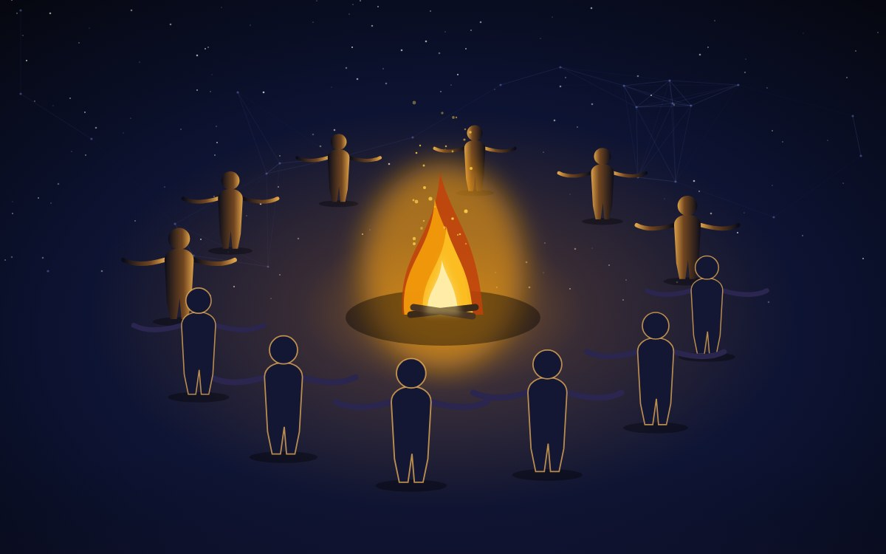
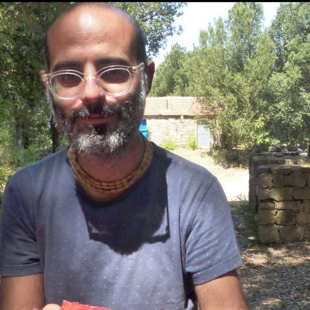
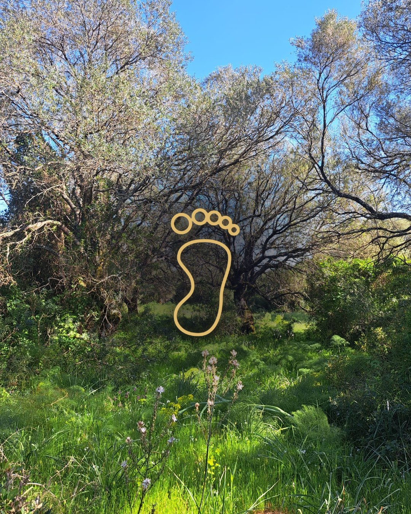

TERRA · VICINATI
La Bacheca.
La bacheca dei villaggi e dei vicinati: quello che pubblicano i villaggi, e i contenuti di chi partecipa.
LA RADIOle puntate ›

GIOVEDÌ 16 · ORE 19 · LA DIRETTA DEL VILLAGGIO
Mutuo credito cooperativo
direttacon Guido Grossi e Vittorino Crivello · a cura di Gabriele Dettori e Marco Caddeo
Entra nella direttaDiretta per i karma yoger o per chi prenota.
IL PRATICANTATO

Dal progetto sogno alla cooperazione per una civiltà evoluta.L'accompagnamento segue il ritmo dei cicli lunari (luna nuova — luna piena). Gli incontri di gruppo avvengono in diretta con Gabriele.Che cos'è il praticantato
KARMA YOGA · I BISOGNI DEL VILLAGGIOtutti e 8 ›
Quello di cui il villaggio ha bisogno, per chi può fare. Si tocca «lo prendo» e la cosa entra tra le tue cose da fare.
☀
Mettere a disposizione un punto di ritiroUn luogo dove ricevere i pacchi del gruppo, nella tua zona.
scritto da Gabriele Dettori · coordina il villaggio
scritto da Gabriele Dettori · coordina il villaggio
☀
Mappare i produttori del territorioRiso, miele, olio, formaggi, vino. Nome, cosa fanno, quanto possono dare.
scritto da Gabriele Dettori · coordina il villaggio
scritto da Gabriele Dettori · coordina il villaggio
☀
Dare una mano all'incontro dell'11Accoglienza, sedie, registrazione dei presenti.
scritto da Gabriele Dettori · coordina il villaggio
preso da tescritto da Gabriele Dettori · coordina il villaggio
CALENDARIOtutto il mese ›
12
ottobre · lun
Strumenti per fare ordineore 19 · in diretta◐
17 ottobre
Primo quartola luna25
ottobre · dom
Villaggio Felicitas · OristanoCas'ale · Baratili · dalle 10SABATO 21 NOVEMBRE · DALLE 10:00
Felicitas Festival
TRAME · la forza di essere connessi — Centro Sociale + Centro polifunzionale, ex Cantina Madau · Baratili San PietroDentro trovi:
la conversazionequello che serve saperele cose da faregli aggiornamenti dalla squadra
QUELLO CHE PUBBLICA IL VILLAGGIOtutto ›

festaVillaggio Felicitas - 25 ottobre OristanoCas'ale - Baratili · dalle 10
 articolo
articoloMetodo Di Bella: un ponte tra ricerca e coscienza20/07 · Bologna
 articolo
articoloSa PirigheddaOristano
 articolo
articolo60 anni di Hare Krishna — la Presenza Viva26/06 · Firenze
 articolo
articoloIdea economica per i vicinati16/07 · Abruzzo
 articolo
articoloUna casa a Pomaia, accanto all'Istituto Lama Tzong Khapa04/02 · Pomaia
Le cose da fare.
11 ottobre · san Firmino · luna nuova
IL PRATICANTATO
Il percorso, in cinque passaggi.
la base da cui parti · scritto dal praticantato · Gabriele Dettori
①
La centratura dentro i cinque elementiIn che modo la propria memoria e la propria focalizzazione si inquadrano grazie all'utilizzo degli elementi, e al disegno della geometria sacra.
in coda②
Lo sviluppo del progetto sognoDa qui nasce quello che poi porterai alla comunità, o vengono dati suggerimenti per il tuo servizio già in essere.
in coda③
L'interazione con la comunitàLe ore di praticantato, il karma yoga, aiutare nel luogo, dare una mano online.
in coda④
Si inseriscono persone dentro un teamQuello che hai cominciato da solo diventa il lavoro di un gruppo.
in coda⑤
E quel team alimenta le aree centraliEmporio, Assistenza, Scuola, Edizione, Vicinati.
in codaIl percorso dei talenti: [ in studio ] — praticantato e talenti, insieme, fanno il costo.
◐
Dare una mano all'incontro dell'11karma yoga del villaggio · scritto da Gabriele Dettori · in avanzamento
›
◐
Il flusso delle orme: la vista per stadiotuo obiettivo · in avanzamento · entro 04/10
›○
Lettera d'intentiobiettivo del Felicitas Festival · scritto da te · in coda
›LE MIE ORMEtutte ›
festa
Villaggio Felicitas - 25 ottobre OristanoCas'ale - Baratili · dalle 10
L'ORMAtutto ›
Tutto quello che hai fatto nel tempo, e altre cose. Mese per mese.
ottobre 2026
Cas'ale · Baratiliazione · 11 ottobre
›
Villaggio Felicitas - 25 ottobre Oristanofesta · aperta da te
›●
Dare una mano all'incontro dell'11karma yoga · in avanzamento
›settembre 2026
○
Praticantato, alla luna pienaincontro · 26 settembre
›○
Praticantato, il primo incontroincontro · 11 settembre · alla luna nuova
›luglio 2026
Metodo Di Bella: un ponte tra ricerca e coscienzaarticolo · 20 luglio · Bologna
›Idea economica per i vicinatiarticolo · 16 luglio · Abruzzo
›giugno 2026
60 anni di Hare Krishna — la Presenza Vivaarticolo · 26 giugno · Firenze
›altre cose
✦
I talenti radiceAlchimia · Costruisco · [ … ]
›▦
Le squadreFelicitas Festival · capofila
›